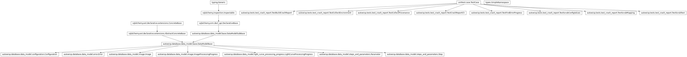
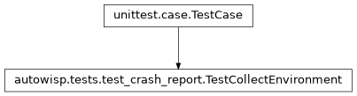
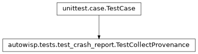
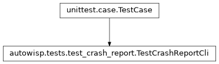
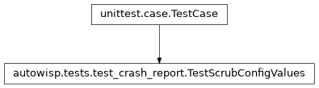
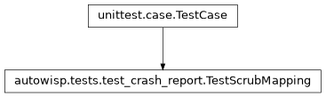

autowisp.tests.test_crash_report module
Class Inheritance Diagram

Unit tests for the crash-report builder and its scrubbing helpers.
- class autowisp.tests.test_crash_report.TestBuildCrashReport(methodName='runTest')[source]
Bases:
TestCasebuild_crash_report assembles a scrubbed, best-effort zip.
- class autowisp.tests.test_crash_report.TestCollectEnvironment(methodName='runTest')[source]
Bases:
TestCase
collect_environment records platform + requested package versions.
- class autowisp.tests.test_crash_report.TestCollectProvenance(methodName='runTest')[source]
Bases:
TestCase
collect_provenance captures the current environment, JSON-safe.
- class autowisp.tests.test_crash_report.TestCrashReportCli(methodName='runTest')[source]
Bases:
TestCase
The wisp-crash-report CLI: latest-error lookup and the entry point.
- class autowisp.tests.test_crash_report.TestFindErrorProgress(methodName='runTest')[source]
Bases:
TestCasefind_error_progress resolves a step error to its processing record.
- test_filters_by_image_type_when_image_known()[source]
When the error names an image, the image’s type disambiguates.
- test_none_for_stepless_or_runless()[source]
A pipeline/BUI error (no step or run) resolves to nothing.
- test_resolves_lightcurve_step()[source]
A lightcurve-step error resolves via the LC progress table.
Regression for the crash-report gap where LC steps (tfa/epd/…) recorded in
light_curve_processing_progress– a different table than image steps – could never resolve, so their logs were never collected.
- class autowisp.tests.test_crash_report.TestScrubConfigValues(methodName='runTest')[source]
Bases:
TestCase
scrub_config_values redacts secret configuration values in the DB.
- classmethod setUpClass()[source]
Hook method for setting up class fixture before running tests in the class.
- class autowisp.tests.test_crash_report.TestScrubMapping(methodName='runTest')[source]
Bases:
TestCase
scrub_mapping redacts values whose key names a secret.